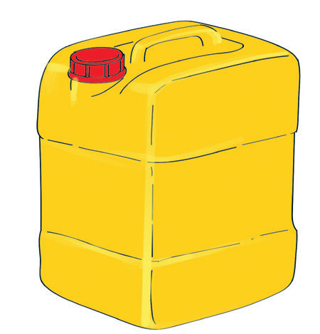
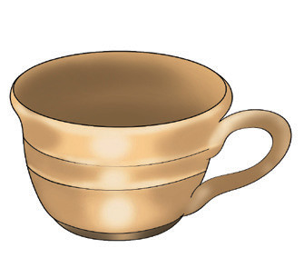
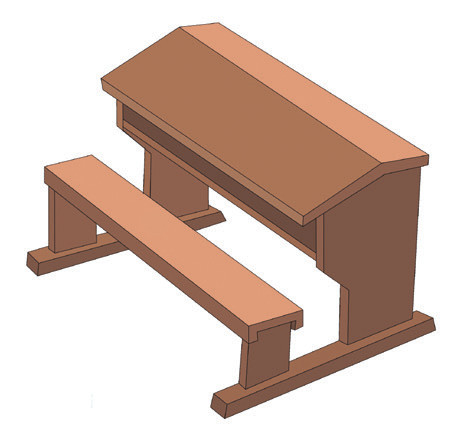
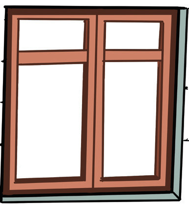

5. Soma silabi na maneno haya.
kekua
kikoo
kukiu
kakioo
kokaa
6. Soma maneno haya kwa haraka.
kakakokakaba
kakikikokumi
kokiokoakima
kukubakikimo
kekikamakobe
7. Tunga sentensi kwa kutumia maneno haya.
kakakakikobekukukoka
MfanoKaka anaogopa kobe na kuku.
Sauti ya herufi d
Hii ni picha ya nini?

1. Tamka sauti ya mwanzo ya neno ulilolitaja.
2. Taja maneno mengine yanayoanza na sauti hiyo.
Taja majina ya picha hizi.


